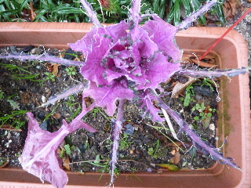
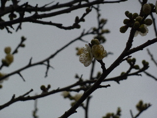
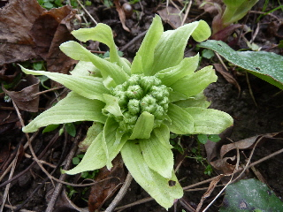
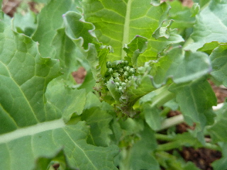
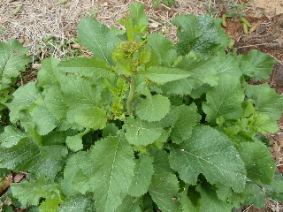
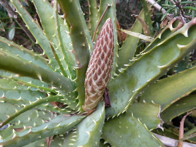
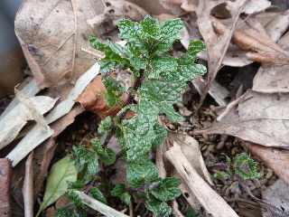
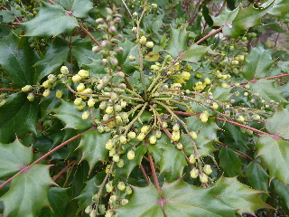

葉ボタンは美味しいですか
2015/02/01
葉ボタンって食べられちゃうんですね。

食べたのは何でしょう。
やっぱり虫かな。
寒そうです。
2015/02/01
葉ボタンって食べられちゃうんですね。

食べたのは何でしょう。
やっぱり虫かな。
寒そうです。
2015/02/01
2月になったので梅の季節です。

まだちょっとだけですが、花が咲いてるといいですね。
寒いので、あまり花見はできませんが。
2015/02/08
あんまりフキノトウを採っていなかったら、すっかり開いていました。

なんか硬そう。これはもう収穫しない。
あんまり食べたいって思わなかったので、見てませんでした。
次からは見ようかな。
2015/02/08
あすっこの蕾が出来ていました。

とっても小さい。
あんまり小さいので、収穫する気になりませんでした。
もうちょっと大きくなってから採ります。
2015/02/28
葉っぱを大きく広げたカラシ菜が出来ました。

今は他に食べる野菜が沢山あるので、放置です。
あすっこが沢山育ってるので、そっちを食べなきゃ。
2015/02/28
アロエの真中から今年もなんて言うのかわからないですが、出て来ました。

花が咲くのが楽しみです。
2015/02/28
枯れてると思ってたら、小さいながら緑でした。

多年草なんだ。
毎年何もしないでも生えているって楽ちんですね。
2015/02/28
花が咲いてるけど何って名前の木でしょう？

ネット検索して調べました。
柊南天（ヒイラギナンテン）だそうです。
花の付き方が面白いですね。
過去の日記
畑仕事じゃないよ。